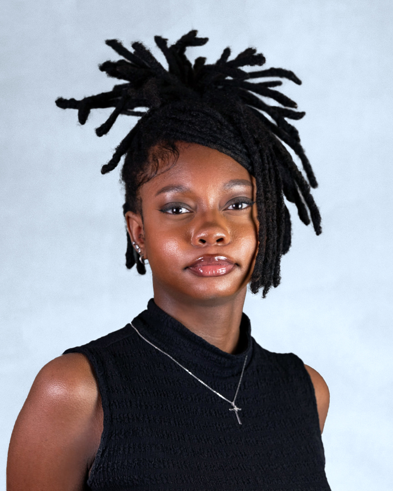

EDDINA COPPAGE
Eddina Coppage is a Texas based artist, born in Leander, Texas May 5th 2001. Eddina is currently residing in Corpus Christi, Texas, and has been since 2018. She is an undergraduate at Texas A&M Corpus Christi, pursuing a Bachelor’s in Fine Arts as an interdisciplinary student with a primary focus in painting. Of all mediums, she mainly works in painting, sculpture, and ceramics. Eddina mainly creates figurative and representational work with subtle ties to surrealism and semi-realism. Eddina earned an Associates degree in studio art in 2023, at Del Mar College, and will obtain a Bachelor of Fine Arts Degree from Texas A&M Corpus Christi in the fall semester of 2025.
She has participated in exhibitions such as the Del Mar 59th Annual National CAIN Art Show, President’s Circle at TAMUCC’s new Weil Gallery, and showcased at the South Texas Botanical Gardens during 2025. At these events, she sold two pieces at both the Weil and Cain gallery, and has a sculpture join the Botanical garden’s art collection. She also features on the front page in the publications of Glasstire, KIII-TV’s website, and Caller-Times. Eddina received the SAMCC Dean's list award from TAMUCC for painting and drawing, as well as received the outstanding student award from DMC. She participated in the Student Art Association at both schools, showcased group work at K-space Gallery for DMC’s Art Association, took part in a community zine, and indulged in community service events during her time at Del Mar in 2022. She attained a position in the Honor Society and NSLS at Del Mar College and Texas A&M Corpus Christi, as well as being nominated to join the Collegiate Scholars at TAMUCC. In 2019 and 2020.
In her youth, Eddina was a four-time nominee to the State VASE art competition, and placed in other youth art exhibitions, such Visionarios, Dia de los Muertos Youth Art Exhibition, Breast Cancer Awareness Youth Art Exhibition, and more. Art is one of Eddina’s biggest realized passions. After graduating with her BFA, Eddina plans to continue her education by pursuing her Master's in Fine Art and a minor in Gallery studies. This is in order to teach art at the college level and have her hand in either art handling or curating in a gallery setting.
ARTIST STATEMENT
My work is an exploration, embracement, and estrangement of self through religion, relationships, experiences, psyche, and the journey of adolescence. Looking at myself through this fragmented view, every piece I make is a ruminating thought that lingers in my mind, I can't extinguish it so I’ve ignited the burdens that I bear for the people of this reality to perceive. Using the processes of painting, sculpture, printmaking, and ceramic, I am shining a light on who Eddina is, what makes me Eddina, and why I am Eddina.